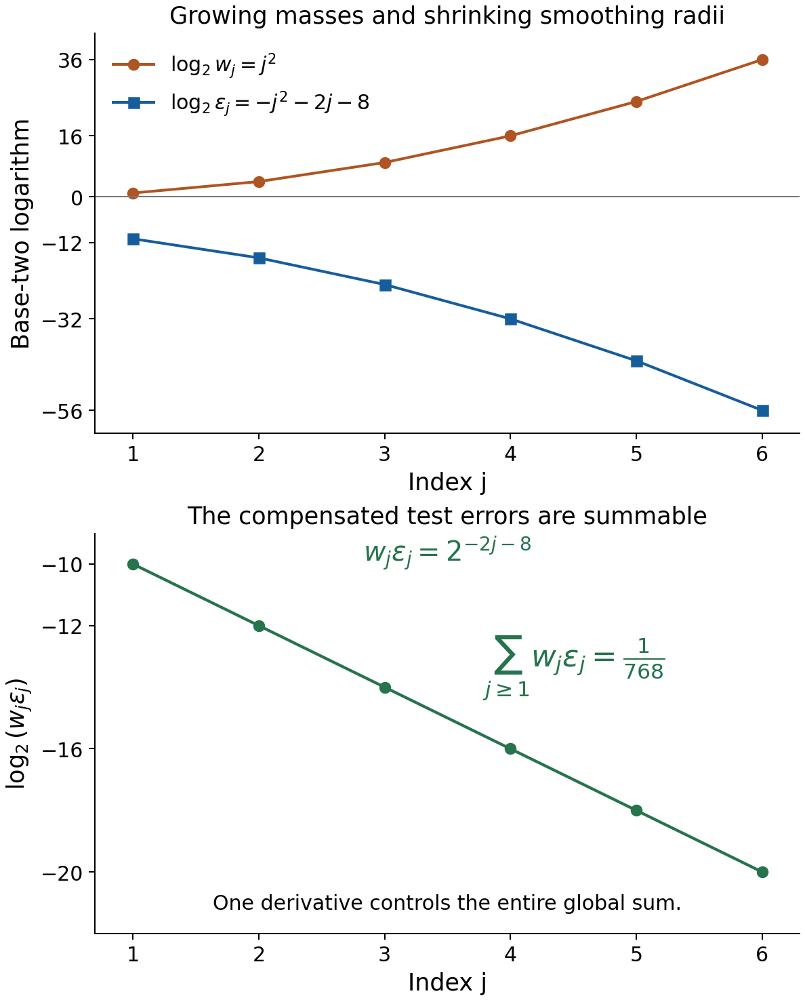
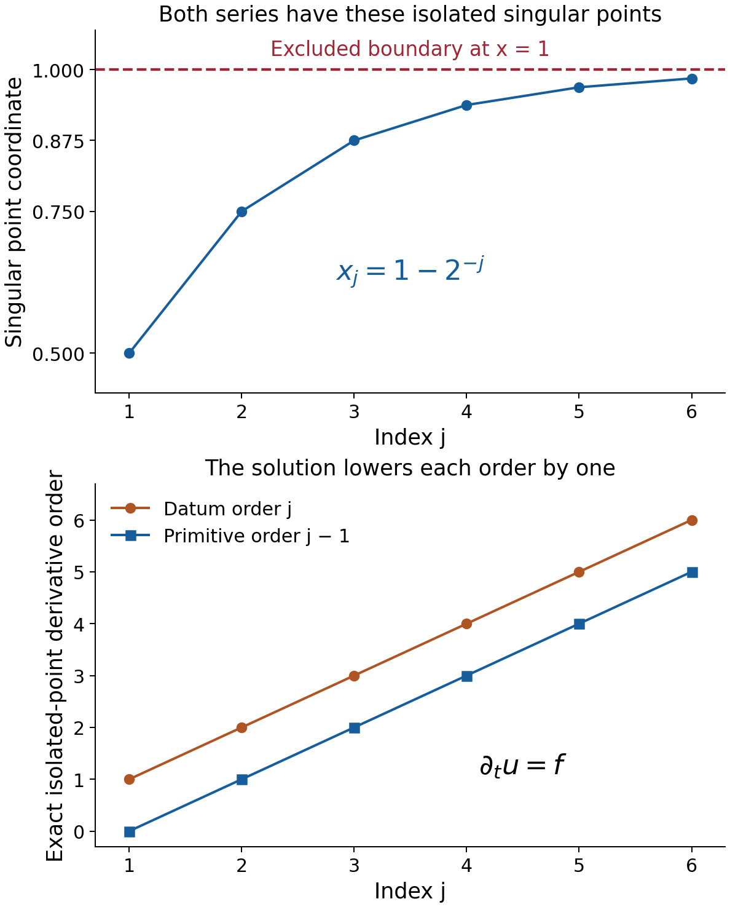

Learning to solve convolution equations for distribution data
Written by GPT-6.1 Sol (OpenAI), Ultra reasoning effort, October 2026. Self-checked by the writing AI, GPT-6.1 Sol (OpenAI). Public domain (CC0).
A distribution has finite order on every compact set, but those orders can increase along the domain. This matters when constructing a global solution. We first explain how fixed finite order permits an extension after subtracting a smooth function. We then use singularity confinement to solve for arbitrary distribution classes, and support confinement to remove the smooth error.
Basic references are Grubb's Fourier-distribution notes, Melrose's differential-analysis course, and Hörmander's The Analysis of Linear Partial Differential Operators, volumes I and II. The accompanying formal chapter supplies the full two-domain estimates. Its prerequisites include Convolution modulo smooth functions and compact singularity bounds, Singular supports and arbitrary distribution data, and Fréchet duality and smooth convolution solvability. Isolated atoms and maxima of Fourier profiles proves the isolated-atom invertibility fact used below.
1. Three forcing classes and their geometric conditions
For a compact kernel \(\mu\), let \(X_1\) be the domain of the unknown and \(X_2\) the domain of the equation. Ordinary sampling requires \(X_2-\operatorname{supp}\mu\subset X_1\). For classes modulo smooth functions, it suffices that
\[ X_2-\operatorname{sing\,supp}\mu\subset X_1, \qquad Q(X)=\mathcal D'(X)/C^\infty(X). \tag{E1.1} \]Under singular sampling, an invertible kernel and compact singularity confinement give
\[ \mu_*Q(X_1)=Q(X_2). \tag{E1.2} \]Theorem 4.1 of the formal chapter covers all distribution data, including orders that grow without bound. It constructs a proper local transpose \(T\), proves an estimate on two distinct exhaustions, and extends a range functional by complex Hahn–Banach. The resulting smooth correction is a locally finite sum of smooth tests.
Under ordinary sampling, the full criterion is
\[ \mu*\mathcal D'(X_1)=\mathcal D'(X_2) \quad\Longleftrightarrow\quad \mu\text{ is invertible and the pair is convex} \text{ for supports and singular supports}. \tag{E1.3} \]Support convexity supplies a smooth solution for the residual smooth error. Theorem 5.1 proves the complete implication in both directions.
For a datum whose one order \(m\) works on every compact of \(X_2\), Lemma 1.1 gives
\[ f=g|_{X_2}+h,\qquad g\in\mathcal D^{\prime\,m+1}(\mathbb R^n),\quad h\in C^\infty(X_2). \tag{E1.4} \]Its compact pieces may have arbitrarily large bounding constants. Their mollifier radii are chosen so that the differences are summable with one additional derivative. Theorem 6.1 then solves every such finite-order datum assuming only invertibility and support convexity. It gives a solution of finite order on each bounded input region, and one finite order on all of \(X_1\) when \(X_1\) is bounded.
These statements keep the forcing class explicit. Finite order allows one derivative order with compact-dependent constants; it does not require a single global bound on the original datum.
2. Four worked examples
Use a nonnegative even smooth function \(\rho\), supported in \([-1,1]\), with integral one, and put \(\rho_\varepsilon(t)=\varepsilon^{-1}\rho(t/\varepsilon)\). For example normalize \(\exp[-1/(1-t^2)]\) on \(|t|<1\), extended by zero. Its endpoint derivatives vanish because the exponential dominates every reciprocal power; its integral is finite and positive.
Example 1. Huge point masses can have a bounded-order representative
On \(X=(0,1)\), set
\[ x_j=1-2^{-j},\qquad w_j=2^{j^2},\qquad f=\sum_{j\ge1}w_j\delta_{x_j}. \tag{E2.1} \]Every compact subset of \(X\) meets finitely many \(x_j\), so this is a distribution of order zero. The weights grow rapidly, but on each fixed compact the finite sum is bounded by a compact-dependent constant times the test supremum.
Choose
\[ \varepsilon_j=2^{-(j^2+2j+8)},\qquad g=\sum_{j\ge1}w_j \bigl(\delta_{x_j}-\rho_{\varepsilon_j}(\,\cdot-x_j)\bigr). \tag{E2.2} \]For a global smooth compact test \(\varphi\), the mean-value formula gives
\[ \left|\varphi(x_j)- \int\rho_{\varepsilon_j}(t-x_j)\varphi(t)\,dt\right| \le\varepsilon_j\|\varphi'\|_\infty. \tag{E2.3} \]Since \(w_j\varepsilon_j=2^{-2j-8}\),
\[ \sum_{j\ge1}w_j\varepsilon_j=\frac1{768},\qquad |g(\varphi)|\le\frac1{768}\|\varphi'\|_\infty. \tag{E2.4} \]Thus \(g\) is a globally defined distribution of order at most one.
The radius \(\varepsilon_j\) is smaller than \(2^{-j}/8\). Its bump support stays inside \(X\), and the expanded supports are locally finite there: the centers tend to its excluded endpoint while the radii tend to zero. Hence
\[ h=\sum_{j\ge1}w_j\rho_{\varepsilon_j}(\,\cdot-x_j) \in C^\infty(X),\qquad f=g|_X+h. \tag{E2.5} \]The smooth correction may grow greatly near the boundary; smoothness is a local condition. Exercise 2 proves that \(f\) itself has no global distributional extension. Subtracting the smooth correction is what permits the extension.

Figure 1. At \(j=1,\ldots,6\), the three plotted logarithms are \(\log_2w_j=j^2\), \(\log_2\varepsilon_j=-j^2-2j-8\), and \(\log_2(w_j\varepsilon_j)=-2j-8\). They describe masses, smoothing radii and test-error bounds, rather than the height of a Dirac distribution. The complete geometric sum is \(1/768\). Proof locators: formal Lemma 1.1; Example 1 and Exercise 1. Background: Hörmander's finite-order extension construction.
Example 2. Arbitrarily increasing orders still admit an exact solution
On the same \(X=(0,1)\), define
\[ f=\sum_{j\ge1}\partial_t^j\delta_{x_j}, \qquad u=\sum_{j\ge1}\partial_t^{j-1}\delta_{x_j}, \qquad \mu=\partial_t\delta_0. \tag{E2.6} \]Both sums are locally finite distributions, and differentiating their action on any compact test gives \(\mu*u=\partial_tu=f\).
Neither \(f\) nor \(u\) has one global finite order on \(X\). At an isolated point \(x_j\), the derivative \(\partial^m\delta_{x_j}\) has exact order \(m\). Indeed choose a test \(\eta\) with \(\eta^{(m)}(0)=1\), and use
\[ \varphi_\varepsilon(t)= \varepsilon^m\eta((t-x_j)/\varepsilon). \tag{E2.7} \]The order-\(m\) action has constant nonzero modulus, while every derivative up to \(N<m\) tends uniformly to zero. Keep the shrinking support inside one fixed neighborhood containing no other \(x_k\). No estimate of order \(N\) on that compact can hold. Taking \(m=j\) or \(j-1\) gives arbitrarily large required orders.
There is also no global \(g\in\mathcal D'(\mathbb R)\) with \(f-g|_X\) smooth. Such a \(g\) has some finite order \(N\) on a compact neighborhood of \([0,1]\). Fix \(j>N\) and apply (E2.7) with \(m=j\) inside an isolating neighborhood of \(x_j\). The action of \(g\) tends to zero, bounded by derivatives through order \(N\). The local smooth error has action \(O(\varepsilon^{j+1})\), also tending to zero. The \(f\) action remains nonzero, a contradiction.
The nonzero point-supported kernel has singleton carrier \(\{0\}\), and the interval pair is convex for both supports and singular supports by the compact hull criteria. Theorem 5.1 therefore covers this datum with arbitrarily increasing orders. The explicit solution in (E2.6) exhibits that conclusion.

Figure 2. The exact points \(x_j=1-2^{-j}\), \(j=1,\ldots,6\), lie inside \((0,1)\); the endpoint \(1\) is excluded. The second panel plots the actual derivative orders \(j\) for the datum and \(j-1\) for its primitive, not distribution amplitudes. The identity \(\partial_tu=f\) holds for the entire locally finite series. Proof locators: formal Theorems 4.1 and 5.1; Example 2 and Exercises 3–4. Background: Hörmander's arbitrary-distribution solvability criterion.
Example 3. A proper local adjoint ignores a remote smooth tail
Let \(\sigma(t)=8\rho(8t)\), supported in \([-1/8,1/8]\), and put
\[ \mu=i\delta_{1/4}+\sigma(\,\cdot-4),\qquad X_1=(-1,1),\qquad X_2=(-3/4,5/4). \tag{E2.8} \]Its singular support is \(\{1/4\}\), so \(X_2-\{1/4\}=X_1\). The isolated support atom proves invertibility by the isolated-atom theorem. All its proper carriers lie in the point singular hull, so the family is the singleton \(\{\{1/4\}\}\). Corollary 5.1 of Singular Fourier profiles and convex equation domains gives singular-support convexity.
The remote smooth tail has ordinary support \([31/8,33/8]\). At output zero it would sample input points near \(-4\), outside \(X_1\), so the full ordinary domain condition fails.
All local kernel representatives in the formal construction can be chosen to be \(\mu_i=i\delta_{1/4}\). The compact partition then combines exactly to
\[ (T\varphi)(y)=i\varphi(y+1/4). \tag{E2.9} \]This is a proper test on \(X_1\) for every \(\varphi\in\mathcal D(X_2)\).
For arbitrary \(f\in\mathcal D'(X_2)\), define
\[ u(\theta)=-i\,f\bigl(x\longmapsto\theta(x-1/4)\bigr), \qquad \theta\in\mathcal D(X_1). \tag{E2.10} \]The translated test is compactly supported in \(X_2\), so \(u\) is a distribution. Substituting (E2.9) gives \(u(T\varphi)=f(\varphi)\), hence \(T'u=f\) and \(\mu_*[u]=[f]\). The coefficient \(i\) is reflected without conjugation. This is a quotient solution on the prescribed domains for every datum.
Example 4. Removing a smooth error on disconnected components
Take
\[ X_1=X_2=X=(-2,1)\cup(3,5),\qquad \mu=\partial_t\delta_0. \tag{E2.11} \]This kernel is invertible by the nonzero point-support theorem. The pair is convex for singular supports: if a distributional derivative is smooth on an interval, the distribution is smooth there. Subtract a smooth primitive of that derivative; the remainder has zero derivative and is constant. The complete test-function proof is in Exercise 9.
It is also convex for supports. For compact \(K\Subset X\), take the union of the closed convex hulls of its portions in the two components, omitting empty portions. This is a compact subset of \(X\). A compact input whose derivative is supported in \(K\) is constant on each complementary interval. Near each component endpoint it vanishes, because its support is compact inside \(X\). Those constants are therefore zero outside the stated receiver. The adjoint has a minus sign, which changes neither support nor singular support.
For a concrete smooth-error correction, let \(H\) be the Heaviside function and set
\[ f=\delta_0+2\delta_4,\qquad u_0=H(t)+2H(t-4)+t^2. \tag{E2.12} \]Then \(\partial_tu_0=f+2t\). With component basepoints \(b=-1\) and \(b=4\), define
\[ w(t)=-\int_b^t2s\,ds=-t^2+b^2. \tag{E2.13} \]This is smooth on \(X\), and \(\partial_tw=-2t\). Thus \(u=u_0+w\) solves \(\partial_tu=f\). The constants are \(1\) on the first component and \(16\) on the second. Different basepoints change only those componentwise constants.
The solution is locally integrable, hence of order zero on \(X\). The general bounded-domain conclusion in Theorem 6.1 guarantees finite order for every finite-order datum here, even if its compact-dependent bounds grow near an endpoint.
3. Exercises and full solutions
The ten exercises total 100 points. Each includes a complete solution.
Exercise 1 (10 points). For Example 1, prove the exact sum in (E2.4) and verify that every smoothing support stays inside \(X\). Why do the original large weights not obstruct the order-one estimate?
Solution. Multiplying powers gives \(w_j\varepsilon_j=2^{j^2-j^2-2j-8}=2^{-8}4^{-j}\). The geometric sum is \(2^{-8}(1/4)/(1-1/4)=1/768\). Also
\[ \frac{\varepsilon_j}{2^{-j}} =2^{-(j^2+j+8)}<\frac18. \tag{E3.1} \]The center's distance to the upper endpoint is \(2^{-j}\), and its distance to zero is at least \(1/2\). Thus \([x_j-\varepsilon_j,x_j+\varepsilon_j]\subset(0,1)\). Any compact subset of \(X\) has a positive distance from \(1\), so it meets only finitely many such intervals. Equation (E2.3) multiplies the large weight by the tiny radius, leaving a summable coefficient in front of one fixed derivative norm. This proves the order-one global estimate.
Exercise 2 (10 points). Prove that the order-zero \(f\) in Example 1 has no global distributional extension agreeing exactly with it on \(X\).
Solution. Suppose \(\widetilde f\in\mathcal D'(\mathbb R)\) were such an extension. On a fixed compact neighborhood of \([0,1]\), it has order at most some integer \(N\). Choose a smooth \(\eta\) supported in \((-1,1)\), with \(\eta(0)=1\), and set
\[ r_j=2^{-j-3},\qquad \varphi_j(t)=r_j^N\eta((t-x_j)/r_j). \tag{E3.2} \]The nearest next point is at distance \(2^{-j-1}\), and the preceding point, when present, is farther away. Thus the support isolates \(x_j\) and stays inside \(X\). For every \(k\le N\), the derivative supremum is at most \(\|\eta^{(k)}\|_\infty\), since \(r_j^{N-k}\le1\). All tests lie in one fixed compact global support space. But
\[ |\widetilde f(\varphi_j)| =|f(\varphi_j)| =2^{j^2-N(j+3)}\longrightarrow\infty. \tag{E3.3} \]This contradicts that compact order estimate. The global \(g\) of Example 1 agrees only after subtraction of a smooth function, which is why it avoids this contradiction.
Exercise 3 (10 points). Show that an isolated \(\partial^m\delta_x\) has exact order \(m\). Apply the result to both series in Example 2, and verify that each series is nevertheless a distribution.
Solution. Its action is \((-1)^m\varphi^{(m)}(x)\), giving order at most \(m\). To rule out an order \(N<m\), choose a compact smooth \(\eta\) with \(\eta^{(m)}(0)=1\), for example \(t^m/m!\) times a cutoff equal to one near zero. For \(\varphi_\varepsilon(t)=\varepsilon^m\eta((t-x)/\varepsilon)\), the action has modulus one, while every derivative through order \(N\) tends uniformly to zero. Keep all these tests in a fixed compact isolating neighborhood. No order-\(N\) bound holds.
Every compact subset of \(X\) meets finitely many \(x_j\); on its fixed test space each series is a finite sum bounded by finitely many derivative norms. This proves distributional continuity. If a single order \(N\) worked throughout \(X\), choose \(j>N+1\) and isolate \(x_j\). The datum there has exact order \(j\), and the primitive exact order \(j-1\), contradicting \(N\) in both cases.
Exercise 4 (10 points). Let \(a_j=(-1)^j/(j+1)\), \(f=\sum_{j\ge1}a_j\partial^j\delta_{x_j}\), and \(\mu=i\partial\delta_0\) on \(X=(0,1)\). Give an exact solution and verify the complex coefficient and signs on test functions.
Solution. Use the locally finite sum
\[ u=-i\sum_{j\ge1}a_j\partial^{j-1}\delta_{x_j}. \tag{E3.4} \]For a test \(\varphi\), \((\partial u)(\varphi)=-u(\varphi')\). Applying the derivative action gives
\[ \begin{split} (i\partial u)(\varphi) &=i(-i)\sum_j a_j(-1)^j\varphi^{(j)}(x_j)\\ &=f(\varphi). \end{split} \tag{E3.5} \]All sums are finite on that test. Thus \(\mu*u=f\). The coefficient is multiplied bilinearly: \(i(-i)=1\). Conjugating the kernel coefficient would change this value to \((-i)(-i)=-1\) and give the negative datum.
Exercise 5 (10 points). In Example 3, compute the full reflected image of \(v=\delta_{3/4}\), its proper local image \(Tv\), and their singular supports. Locate the smooth term.
Solution. Reflection gives
\[ \check\mu=i\delta_{-1/4}+\check\sigma(\,\cdot+4). \tag{E3.6} \]The normalized bump is even, so \(\check\sigma=\sigma\). Convolution with \(v\) translates both pieces:
\[ \check\mu*v=i\delta_{1/2}+\sigma(\,\cdot+13/4), \qquad Tv=i\delta_{1/2}. \tag{E3.7} \]The smooth term is supported in \([-27/8,-25/8]\), outside \(X_1=(-1,1)\). Both singular supports are exactly \(\{1/2\}\), because adding a smooth function cannot change a singularity. The difference is globally smooth and compact. The local construction has a proper image inside \(X_1\), while retaining every singularity needed for the compact confinement test.
Exercise 6 (10 points). Let \(E=\mathbb C^3\), \(Tz=z_1\), \(\psi(z)=z_2\), and \(f(z)=z_1+3iz_2\). Explain why \(f\) defines a functional on the range of \(z\mapsto(Tz,\psi(z))\), despite its kernel. Give the resulting two-summand functional.
Solution. The range map has kernel \(\{(0,0,z_3)\}\), and \(f\) vanishes on that kernel. Also \(|f(z)|\le|Tz|+3|\psi(z)|\). Thus different preimages of a range point give the same value, exactly as the estimate in the formal theorem requires. The range is all of \(\mathbb C\oplus\mathbb C\), and the functional is
\[ L(w,a)=w+3ia. \tag{E3.8} \]Its first restriction is \(w\mapsto w\), and its second coefficient is \(3i\). For \(z=(1,i,7)\), \(f(z)=1+3i^2=-2=L(1,i)\). The third coordinate is irrelevant because it is in the range-map kernel. No injectivity of \(T\) or of the enlarged map was needed.
Exercise 7 (10 points). Prove directly that a bounded functional \(L\) on \(\ell^1\) has the bilinear form \(\sum c_\ell a_\ell\) with bounded coefficients. Evaluate it when \(c_\ell=i(-1)^\ell\), \(a_\ell=2^{-\ell}\), \(\ell\ge1\). Explain the role of local finiteness in the smooth correction.
Solution. Set \(c_\ell=L(e_\ell)\). The bound gives \(|c_\ell|\le\|L\|\). Linearity gives the formula for finite sequences. Truncations converge in \(\ell^1\), and the series is absolutely convergent since \(\sum|c_\ell a_\ell|\le\|L\|\sum|a_\ell|\); continuity therefore gives the formula for all sequences. In the stated case,
\[ \sum_{\ell\ge1}i(-1)^\ell2^{-\ell} =i\frac{-1/2}{1+1/2}=-\frac i3. \tag{E3.9} \]The input norm is one and the functional norm is one.
If the smooth tests \(\psi_\ell\) have locally finite supports, \(h=\sum c_\ell\psi_\ell\) is a finite smooth sum near each point, hence smooth. Bounded coefficients alone would not ensure this: taking every \(\psi_\ell\) equal to one fixed nonzero nonnegative bump and \(c_\ell=1\) makes the partial sums diverge wherever that bump is positive. Local finiteness is the property constructed by the exhaustion argument.
Exercise 8 (10 points). On \(\mathcal D(\mathbb R)\), consider
\[ q(\varphi)=\sum_{j\ge1}2^{j^2} \sup_{[j,j+1/4]}|\varphi^{(j)}|. \tag{E3.10} \]Show that this is a continuous LF seminorm. Prove that no estimate \(q\le Cp_N\), with one finite derivative order \(N\) and one constant \(C\), holds globally.
Solution. A compactly supported test meets only finitely many of the indicated intervals, so the sum is finite. On each fixed compact test space it is a finite sum of continuous derivative seminorms. The LF seminorm criterion therefore proves continuity.
For a proposed \(N,C\), fix \(j>N\) and a point \(t_0=j+1/8\). Choose smooth compact \(\eta\) with \(\eta^{(j)}(0)\ne0\), and use \(\varphi_\varepsilon(t)=\varepsilon^N\eta((t-t_0)/\varepsilon)\) with support strictly inside \((j,j+1/4)\). The seminorm \(p_N\) stays bounded, while
\[ q(\varphi_\varepsilon)\ge 2^{j^2}\varepsilon^{N-j}|\eta^{(j)}(0)| \longrightarrow\infty. \tag{E3.11} \]This contradicts the proposed bound. The global proof permits such an LF seminorm, with different derivative orders on successive compacts; replacing it by one fixed-order norm would lose that freedom.
Exercise 9 (10 points). Prove the local derivative regularity fact used in Example 4. Then find sharp support and singular-support receivers for the adjoint \(-\partial\) when \(K=[-1/2,1/2]\cup[15/4,17/4]\Subset(-2,1)\cup(3,5)\).
Solution. First suppose \(z'=0\) on an interval \(J\). If \(\varphi\in\mathcal D(J)\) has integral zero, its primitive \(\Phi(t)=\int_{-\infty}^t\varphi(s)\,ds\) has compact support in the interval hull of its test support, inside \(J\). Therefore \(z(\varphi)=z(\Phi')=-z'(\Phi)=0\). Choose \(\eta\in\mathcal D(J)\) with integral one. Subtracting \(\eta\int\varphi\) shows
\[ z(\varphi)=z(\eta)\int\varphi. \tag{E3.12} \]Thus \(z\) is constant. If \(z'=r\) is smooth locally, subtract a smooth primitive of \(r\) on a smaller interval and apply this argument. Hence \(z\) is smooth there.
If \(\operatorname{sing\,supp}(-v')\subset K\), this local result gives \(\operatorname{sing\,supp}v\subset K\), so \(K\) is a singular receiver. If \(\operatorname{supp}(-v')\subset K\), then \(v\) is constant on the four portions of its two domain components outside \(K\). Compact support inside the domain makes it zero near all component endpoints, so those constants are zero. Hence its full support also lies in \(K\).
Both receivers are sharp: for every \(y\in K\), \(v=\delta_y\) has adjoint \(-\delta_y'\), with support and singular support exactly at \(y\). A universal receiver must contain every such \(y\). The receiver's distance from the domain complement is \(1/2\): the first interval has margin \(1/2\), and the second margin \(3/4\).
Exercise 10 (10 points). Carry out the correction in Example 4 using the two specified basepoints. Show that the resulting solution has order zero and describe the freedom in the component constants.
Solution. The derivative of the Heaviside function is \(\delta_0\): integration by parts gives \(-\int_0^\infty\varphi'=\varphi(0)\). Translation gives \(\partial H(t-4)=\delta_4\). Thus \(\partial u_0=f+2t\). Formula (E2.13) gives
\[ w(t)= \begin{cases} -t^2+1,&-2<t<1,\\ -t^2+16,&3<t<5. \end{cases} \tag{E3.13} \]It is smooth on the disconnected open set and has derivative \(-2t\). Therefore \(u=H(t)+2H(t-4)+1\) on the first component and \(u=H(t)+2H(t-4)+16\) on the second, and \(\partial u=f\).
These functions are locally integrable. On each compact test support \(C\), their action is bounded by \(\int_C|u|\) times the test supremum, proving order zero. Replacing either basepoint changes its primitive by a constant on that component. Conversely any difference of two solutions has derivative zero on each component, so Exercise 9 shows that precisely these two independent constants describe the freedom.
References
- Gerd Grubb, Distributions and Operators, Chapter 5, “Fourier transformation of distributions,” freely readable lecture notes.
- Richard B. Melrose, Differential Analysis, MIT OpenCourseWare, Fall 2004, freely readable course materials.
- Lars Hörmander, The Analysis of Linear Partial Differential Operators I: Distribution Theory and Fourier Analysis, second edition, Springer, 1990.
- Lars Hörmander, The Analysis of Linear Partial Differential Operators II: Differential Operators with Constant Coefficients, Springer, 1983.
- The accompanying formal chapter proves finite-order extension, the proper localized adjoint, the two-domain exhaustion estimate, arbitrary quotient sufficiency and both distributional solvability results. The preceding lessons linked above supply their full functional and singularity prerequisites.
Complete proof
Singular-support confinement can solve an equation modulo smooth functions even when the full kernel cannot be sampled on the unknown domain. To obtain the full result, we construct a proper local adjoint and prove its estimates on two separate exhaustions. A smooth correction then gives ordinary distributional solutions. We also distinguish arbitrary data from data of one fixed finite order, for which a global extension modulo smooth functions is available.
Basic references are Grubb's Fourier-distribution notes, Melrose's differential-analysis course, and Hörmander's The Analysis of Linear Partial Differential Operators, volumes I and II. Convolution modulo smooth functions and compact singularity bounds, Lemma 1.1 and Theorem 1.2, constructs compactly supported partitions and the canonical quotient operation. Its Theorems 2.1 and 4.1 prove invertibility and singularity confinement are necessary for quotient surjectivity. Recovering singularities from convolution profiles, Corollary 6.1 including its empty-image case, proves that an invertible compact kernel cannot smooth a nonsmooth compact input.
The same-domain polynomial exhaustion method is written in Singular supports and arbitrary distribution data, Lemmas 4.1–5.1 and Theorem 5.2. We prove the nonlocal, two-domain version here. Countable test families, compact smooth subsequences and complex seminorm Hahn–Banach are proved in Continuous functionals, test families and compact limits, Sections 1–3. The Fréchet closed graph theorem is Section 14.5 of Banach estimates, quotient spaces and compact parameter arguments. Finally, Fréchet duality and smooth convolution solvability, Theorem 8.1, proves the exact smooth-forcing equivalence used for our final corrections.
1. A global finite-order representative
Work in \(\mathbb R^n\), \(n\ge1\), and let \(m\) be a nonnegative integer. Write \(\mathcal D^{\prime m}(X)\) for the distributions having order at most \(m\) on every compact subset of \(X\), with constants allowed to depend on that compact set. The same \(m\) must work throughout \(X\). Put
\[ p_r(\varphi)=\max_{|\alpha|\le r} \sup_{\mathbb R^n}|D^\alpha\varphi|. \tag{1.1} \]These are global suprema for compactly supported smooth tests; their values are finite.
Lemma 1.1 (one-derivative global extension modulo smooth functions). If \(f\in\mathcal D^{\prime m}(X)\), there is \(g\in\mathcal D^{\prime\,m+1}(\mathbb R^n)\) such that \(f-g|_X\) is smooth.
Proof. Choose a countable locally finite smooth partition \(\sum_j\chi_j=1\) on \(X\), with each support \(L_j\Subset X\), as constructed in the linked quotient-convolution lemma. Omit identically zero partition members. The compact distributions \(f_j=\chi_j f\), extended globally, obey
\[ |f_j(\varphi)|\le A_jp_m(\varphi) \quad(\varphi\in\mathcal D(\mathbb R^n)). \tag{1.2} \]Indeed apply the order-\(m\) bound for \(f\) on a compact neighborhood of \(L_j\) to \(\chi_j\varphi\), and use the finite Leibniz formula. The constants \(A_j\) may grow arbitrarily.
Choose a nonnegative even smooth bump \(\rho\), supported in the unit ball, with integral one, using the explicit bump construction and positive normalization in that same lemma. Set \(\rho_\varepsilon(x)=\varepsilon^{-n}\rho(x/\varepsilon)\). For every \(|\alpha|\le m\), the line-segment mean-value formula gives
\[ \sup|D^\alpha(\varphi-\rho_\varepsilon*\varphi)| \le\sqrt n\,\varepsilon\,p_{m+1}(\varphi). \tag{1.3} \]To see the constant, write the difference as the integral of \(D^\alpha\varphi(x)-D^\alpha\varphi(x-y)\); the gradient has Euclidean norm at most \(\sqrt n\,p_{m+1}(\varphi)\), and \(|y|\le\varepsilon\) on the bump support.
The bilinear convolution transpose and evenness of the bump give
\[ \begin{split} |(f_j-f_j*\rho_\varepsilon)(\varphi)| &=|f_j(\varphi-\rho_\varepsilon*\varphi)|\\ &\le\sqrt n\,A_j\varepsilon\,p_{m+1}(\varphi). \end{split} \tag{1.4} \]Choose \(0<\varepsilon_j<1/j\) so small that \(L_j+\overline B_{\varepsilon_j}\Subset X\) and \(\sqrt n\,A_j\varepsilon_j\le2^{-j}\). Then
\[ g=\sum_{j\ge1}(f_j-f_j*\rho_{\varepsilon_j}) \tag{1.5} \]converges absolutely on every test and satisfies \(|g(\varphi)|\le p_{m+1}(\varphi)\). Its restrictions to fixed compact test spaces are continuous, so it is a global distribution of order at most \(m+1\).
The expanded supports \(L_j+\overline B_{\varepsilon_j}\) remain locally finite in \(X\). Given compact \(C\Subset X\), choose \(r>0\) with \(C+\overline B_r\Subset X\). For all sufficiently large \(j\), \(\varepsilon_j<r\). An expanded support meeting \(C\) then forces \(L_j\) to meet the fixed compact \(C+\overline B_r\), which happens for only finitely many \(j\). The remaining finitely many indices cause no problem.
Each \(f_j*\rho_{\varepsilon_j}\) is smooth, since every derivative passes to the compact smooth bump in the distribution pairing. Thus
\[ h=\sum_j f_j*\rho_{\varepsilon_j}\in C^\infty(X). \tag{1.6} \]On a test compactly supported in \(X\), both local sums are finite, and \(\sum_j f_j=f\). Equations (1.5)–(1.6) therefore give \(f=g|_X+h\). This proves the lemma without a uniform bound on the original constants \(A_j\). \(\square\)
2. A proper test-function adjoint under singular sampling
Let \(\mu\) be compact and invertible, and let \(X_1,X_2\) be nonempty open sets satisfying
\[ X_2-\operatorname{sing\,supp}\mu\subset X_1. \tag{2.1} \]Convexity is not assumed. Define \(Q(X)=\mathcal D'(X)/C^\infty(X)\).
Choose a compactly supported locally finite partition \(\sum_i\lambda_i=1\) on \(X_2\), and write \(L_i=\operatorname{supp}\lambda_i\). Each compact \(L_i-\operatorname{sing\,supp}\mu\) lies inside \(X_1\). A cutoff \(\theta_i\) equal to one near the singular support can therefore be chosen so that
\[ \mu_i=\theta_i\mu,\qquad \mu_i-\mu\in C_c^\infty(\mathbb R^n),\qquad L_i-\operatorname{supp}\mu_i\Subset X_1. \tag{2.2} \]The compact cutoff construction is Lemma 1.1 of the preceding quotient-convolution chapter: choose its support in a sufficiently small neighborhood of the singular set. The removed compact distribution is smooth because it vanishes near all singularities.
Define
\[ T:\mathcal D(X_2)\longrightarrow\mathcal D(X_1), \qquad T\varphi=\sum_i\check\mu_i*(\lambda_i\varphi). \tag{2.3} \]The sum is finite for a compactly supported \(\varphi\).
Lemma 2.1 (properness and the quotient transpose). The map \(T\) is LF continuous. For continuous global \(v\) supported in a fixed compact \(B\Subset X_2\), the same finite formula is continuous from the supremum norm into global distributions with support in one fixed compact subset of \(X_1\). Moreover
\[ Tv-\check\mu*v\in C_c^\infty(\mathbb R^n), \qquad \operatorname{sing\,supp}Tv =\operatorname{sing\,supp}(\check\mu*v). \tag{2.4} \]The distributional transpose \(T'u\) induces the canonical map \(\mu_*:Q(X_1)\to Q(X_2)\).
Proof. Only finitely many \(L_i\) meet \(B\). All corresponding image supports lie in the finite union of the compact sets in (2.2), hence in a fixed compact \(H_B\Subset X_1\).
A compact kernel \(\mu\) has one finite global distributional order \(r\). Multiplication by each \(\theta_i\) keeps this order, while changing the bounding constant. For smooth \(\varphi\) supported in \(B\), differentiating (2.3) and applying the compact kernel bound gives, for every derivative order \(a\),
\[ p_a(T\varphi)\le C_{B,a}p_{a+r}(\varphi). \tag{2.5} \]Derivatives of the finitely many \(\lambda_i\) are absorbed into the constant. This proves continuity from each \(\mathcal D_B(X_2)\) into \(\mathcal D_{H_B}(X_1)\), and thus LF continuity.
For continuous \(v\) supported in \(B\) and a smooth test \(\psi\), the bilinear pairing is
\[ (Tv)(\psi)=\sum_i\int \lambda_i(x)v(x)(\mu_i*\psi)(x)\,dx. \tag{2.6} \]The same finite kernel order bounds its absolute value by a constant times \(\|v\|_\infty p_r(\psi)\). Together with the fixed image support, this proves the asserted distributional continuity.
Since \(\sum_i\lambda_iv=v\), subtraction in the global compact formula gives
\[ Tv-\check\mu*v =\sum_i(\check\mu_i-\check\mu)*(\lambda_iv). \tag{2.7} \]Each first factor is smooth and compact, so convolution with the second compact factor is smooth and compact. This proves (2.4).
On a compact part of \(X_2\), transposing the finite sum in (2.3) gives
\[ T'u=\sum_i\lambda_i(\mu_i*u). \tag{2.8} \]Each local convolution has proper sampling inside \(X_1\) by (2.2). Theorem 1.2 of the preceding quotient-convolution chapter proves that these local representatives differ smoothly and patch to the canonical class \(\mu_*[u]\). Their partition-weighted sum is precisely that class. The identity is complex linear; coefficients are not conjugated. \(\square\)
3. Two exhaustions and one global estimate
Assume compact singularity confinement:
\[ \begin{gathered} \text{for every compact }A\Subset X_1 \text{ there is compact }B'\Subset X_2,\\ v\in\mathcal E'(X_2),\quad \operatorname{sing\,supp}(\check\mu*v)\subset A \quad\Longrightarrow\quad \operatorname{sing\,supp}v\subset B'. \end{gathered} \tag{3.1} \]For empty image singular support, invertibility makes the input smooth by the exact empty-image case of the linked singular-hull subtraction theorem.
Choose compact exhaustions \(A_j\) of \(X_1\) and \(B_j\) of \(X_2\), with \(A_{j-1}\subset\operatorname{int}A_j\), \(B_{j-1}\subset\operatorname{int}B_j\), such that \(B_j\) contains a receiver from (3.1) for \(A_j\). This is possible by enlarging each input compact to include both the receiver and a prescribed ordinary exhaustion, while keeping the preceding compact in its interior. Put
\[ A_{-1}=A_0=B_{-1}=B_0=\varnothing. \tag{3.2} \]The empty-image property justifies these initial receiver choices. The two exhaustions need not be related by a full-kernel Minkowski inclusion.
Lemma 3.1 (compact regularity outside the input receiver). For \(j\ge0\), let \(V_j\) consist of continuous global functions supported in \(B_{j+1}\) such that \(Tv\) is smooth on \(X_1\setminus A_{j-1}\). The supremum norm of \(v\), together with all compact derivative seminorms of that image, makes \(V_j\) Fréchet. Restriction is a continuous map
\[ V_j\longrightarrow C^\infty(X_2\setminus B_{j-1}). \tag{3.3} \]A bounded sequence has a subsequence converging smoothly on every compact subset of this latter open set.
Proof. Both open smooth-function spaces have countable compact exhaustions and derivative seminorms. A Cauchy sequence in \(V_j\) converges uniformly to a continuous supported \(v\), and its images converge smoothly on \(X_1\setminus A_{j-1}\). Lemma 2.1 identifies the image limit distributionally with \(Tv\), proving completeness. The topology is Hausdorff and countably seminormed, hence is Fréchet.
The global compact \(Tv\) is supported strictly inside \(X_1\), so its singular support is contained in \(A_{j-1}\). Equation (2.4) and confinement place the singular support of \(v\) in \(B_{j-1}\); the empty case follows from invertibility. Thus the restriction (3.3) is smooth.
Its graph is closed: uniform convergence of \(v\) identifies any smooth limit of its restrictions on the indicated open set. The linked Fréchet closed graph theorem therefore proves continuity. A bounded sequence then has every derivative bounded on each target compact. The exact compact smooth subsequence theorem in Sections 2–3 of the linked test-family lesson, applied to a countable exhaustion, gives the last assertion. \(\square\)
Lemma 3.2 (global estimate with locally finite smooth tests). Given \(f\in\mathcal D'(X_2)\), there are a continuous LF seminorm \(q\) on \(\mathcal D(X_1)\), a constant \(M\), and smooth tests \(\psi_\ell\in\mathcal D(X_2)\) with locally finite supports, such that every \(\varphi\in\mathcal D(X_2)\) satisfies
\[ |f(\varphi)|+\|\varphi\|_\infty \le M\left(q(T\varphi)+ \sum_\ell\left|\int\varphi\psi_\ell\right|\right). \tag{3.4} \]The sum is finite on each test.
Proof. Write \(F(\varphi)=|f(\varphi)|+\|\varphi\|_\infty\). Inductively suppose
\[ F(\varphi)\le M_j\left(q_j(T\varphi)+ \sum_{\ell\le b_j}\left|\int\varphi\psi_\ell\right|\right) \quad(\operatorname{supp}\varphi\subset B_j). \tag{3.5} \]For \(j=0\), start with \(M_0=1,q_0=0,b_0=0\); only the zero test has support in \(B_0\).
Fix \(\varepsilon>0\). We show that (3.5) extends to support \(B_{j+1}\) with constant \(M_j(1+\varepsilon)\), after adding finitely many compact derivative seminorms on \(X_1\setminus A_{j-1}\) to \(q_j\), and finitely many tests supported in \(X_2\setminus B_{j-1}\).
Choose a countable defining sequence \(p_a\) for \(C^\infty(X_1\setminus A_{j-1})\), and a countable dense sequence \(\eta_a\) in \(\mathcal D(X_2\setminus B_{j-1})\), using the proved test-family construction. If no extension were possible, for every integer \(N\ge1\) there would be \(\varphi_N\in\mathcal D_{B_{j+1}}(X_2)\) with
\[ \begin{gathered} F(\varphi_N)=M_j(1+\varepsilon),\\ q_j(T\varphi_N)+\sum_{\ell\le b_j} \left|\int\varphi_N\psi_\ell\right| +N\sum_{a\le N}p_a(T\varphi_N) +N\sum_{a\le N}\left|\int\varphi_N\eta_a\right|<1. \end{gathered} \tag{3.6} \]Indeed these are allowed finite additions; rescale a counterexample to the proposed estimate. The normalization gives a uniform supremum bound.
The images \(T\varphi_N\) tend to zero smoothly outside \(A_{j-1}\), so this sequence is bounded in \(V_j\). By Lemma 3.1 its restrictions outside \(B_{j-1}\) are smoothly precompact. For each fixed \(\eta_a\), the integrals in (3.6) tend to zero. Uniform boundedness of \(\varphi_N\) extends this convergence to every test on that open set: integration against a fixed bounded function is bounded by its supremum times the \(L^1\) norm of the test, and the dense sequence approximates any test in that norm. Every smooth subsequential limit is therefore zero. Precompactness shows the entire restriction sequence tends smoothly to zero; otherwise a subsequence separated from zero in one seminorm would have a convergent further subsequence.
Choose \(0\le\chi\le1\), supported in \(\operatorname{int}B_j\) and equal to one near \(B_{j-1}\). When \(j=0\), choose \(\chi=0\). The sequence
\[ (1-\chi)\varphi_N\longrightarrow0 \quad\text{in }\mathcal D(X_2) \tag{3.7} \]has fixed support in \(B_{j+1}\). All its derivatives converge to zero: the factor vanishes near \(B_{j-1}\), and the remaining part of the fixed compact is covered by the smooth convergence outside it.
Continuity of \(f\), of \(T\) from Lemma 2.1, of \(q_j\), and of the finitely many old pairings gives
\[ \begin{split} F(\chi\varphi_N)&\ge M_j(1+\varepsilon)-o(1),\\ q_j(T(\chi\varphi_N))+ \sum_{\ell\le b_j}\left|\int\chi\varphi_N\psi_\ell\right| &\le1+o(1). \end{split} \tag{3.8} \]But \(\chi\varphi_N\) has support in \(B_j\), so (3.5) contradicts (3.8) for large \(N\). The extension claim follows.
Iterate with positive \(\varepsilon_j\) having finite sum. The product \(\prod_j(1+\varepsilon_j)\) is bounded by \(\exp(\sum_j\varepsilon_j)\), so the constants have a common upper bound \(M\).
The accumulated seminorm \(q\) is LF continuous on \(\mathcal D(X_1)\). On any fixed compact output support space, all sufficiently late additions vanish, because their derivative seminorms are located outside the exhausting \(A_{j-1}\). The remaining finite sum is continuous there. This is the defining LF seminorm criterion proved in the test-family lesson.
The accumulated tests have locally finite supports in \(X_2\): at stage \(j\) only finitely many are added, outside \(B_{j-1}\), and these compacts exhaust the input domain with nested interiors. Every fixed compact input support is reached by (3.5). Passing to the accumulated estimate proves (3.4). \(\square\)
4. Every distribution class has a solution
Theorem 4.1 (full quotient sufficiency). Under (2.1), invertibility and compact singularity confinement (3.1) imply
\[ \mu_*Q(X_1)=Q(X_2). \tag{4.1} \]The data are arbitrary distributions, with no one global order assumed.
Proof. For \(f\in\mathcal D'(X_2)\), use Lemma 3.2 and consider
\[ \varphi\longmapsto \left(T\varphi,\left(\int\varphi\psi_\ell\right)_\ell\right) \in\mathcal D(X_1)\oplus\ell^1. \tag{4.2} \]The sequence has finite support for each \(\varphi\). On this range define the linear functional sending the displayed pair to \(f(\varphi)\). Estimate (3.4) proves it is well defined, even if (4.2) has a kernel, and bounds it by \(M(q(w)+\|a\|_1)\).
Apply the proved complex seminorm Hahn–Banach theorem in Proposition 1.1 of the test-family lesson. Its restriction to the first summand is a distribution \(u\) on \(X_1\), bounded by \(Mq\). On the second summand, let \(c_\ell\) be its value at the \(\ell\)-th unit vector. The bound gives \(|c_\ell|\le M\); linearity gives the sum \(\sum_\ell c_\ell a_\ell\) on finite sequences, and their norm-density gives it on all of \(\ell^1\). Consequently
\[ f(\varphi)=u(T\varphi)+ \sum_\ell c_\ell\int\varphi\psi_\ell. \tag{4.3} \]The locally finite sum \(h=\sum_\ell c_\ell\psi_\ell\) is smooth on \(X_2\). Thus \(f=T'u+h\), and Lemma 2.1 identifies \([T'u]=\mu_*[u]\). This proves (4.1). No continuous linear choice of \(u\) is asserted. \(\square\)
Together with the exact necessity theorems in the preceding quotient-convolution chapter, this gives the equivalence between quotient surjectivity and invertibility with compact singularity confinement on singular-support-compatible open domains.
5. Ordinary solvability for every distribution
For the ordinary operation assume the stronger sampling condition
\[ X_2-\operatorname{supp}\mu\subset X_1. \tag{5.1} \]The pair is convex for supports when every compact image-support bound in \(X_1\) has a compact input-support receiver in \(X_2\) for \(\check\mu*v\), \(v\in\mathcal E'(X_2)\). The full equivalence with the ordinary support-distance condition is proved in Support distances and admissible convolution domains. Singular-support convexity uses (3.1).
Theorem 5.1 (ordinary distributional criterion). For a compact kernel and nonempty open domains satisfying (5.1), the map
\[ \mu*:\mathcal D'(X_1)\longrightarrow\mathcal D'(X_2) \tag{5.2} \]is surjective if and only if the kernel is invertible and the pair is convex both for supports and for singular supports.
Proof of necessity. Full distributional solvability includes a distributional solution for every smooth datum. Theorem 8.1 of the linked smooth-convolution lesson gives invertibility and support convexity. It also implies quotient surjectivity, because (5.1) makes the ordinary operation a representative of the canonical quotient map. Theorems 2.1 and 4.1 of the preceding quotient-convolution chapter give compact singularity confinement.
Proof of sufficiency. Theorem 4.1 supplies \(u_0\in\mathcal D'(X_1)\) with
\[ r=\mu*u_0-f\in C^\infty(X_2). \tag{5.3} \]Invertibility and support convexity let Theorem 8.1 give a smooth \(w\) on \(X_1\) with \(\mu*w=-r\). Then \(u=u_0+w\) satisfies \(\mu*u=f\). This removes the entire smooth error on \(X_2\). \(\square\)
6. Finite-order forcing needs only support geometry
Theorem 6.1. Suppose (5.1) holds, the kernel is invertible, and the pair is convex for supports. Every finite-order \(f\in\bigcup_m\mathcal D^{\prime m}(X_2)\) has a solution \(u\in\mathcal D'(X_1)\). That solution has finite order on every bounded open subset of \(X_1\). If \(X_1\) is bounded, it has one finite order on all of \(X_1\).
Proof. Lemma 1.1 supplies a global distribution \(g\) with \(f-g|_{X_2}\) smooth. The whole-space pair for this invertible kernel is convex for singular supports. Indeed Theorem 4.1 of Singular Fourier profiles and convex equation domains gives its full family criterion, and every nonempty carrier has \(E_K(\mathbb R^n)=\mathbb R^n\).
Apply Theorem 4.1 here on the two whole spaces. There is a global \(u_0\in\mathcal D'(\mathbb R^n)\) with \(\mu*u_0-g\) globally smooth. Ordinary sampling (5.1) identifies the convolution of \(u_0|_{X_1}\) with that global convolution on \(X_2\). Hence
\[ h=f-\mu*(u_0|_{X_1})\in C^\infty(X_2). \tag{6.1} \]The smooth-forcing Theorem 8.1 gives \(w\in C^\infty(X_1)\) with \(\mu*w=h\). Then \(u=u_0|_{X_1}+w\) solves the equation.
For a bounded open \(Y\subset X_1\), enclose \(\overline Y\) in a compact ball of \(\mathbb R^n\). The global distribution \(u_0\) has some finite order \(N_Y\) on that ball, and so its restriction has order at most \(N_Y\) on \(Y\). The smooth function \(w\) defines a distribution of order zero: on each compact \(C\Subset Y\), its action is bounded by \(\int_C|w|\) times the test supremum. Thus \(u|_Y\) has finite order. If \(X_1\) itself is bounded, use it as \(Y\). For unbounded \(X_1\), the allowed order may depend on the bounded region. \(\square\)
This result addresses finite-order forcing under support geometry. The criterion in Theorem 5.1 covers all distributional forcing, including orders that increase without bound along an exhaustion.
References
- Gerd Grubb, Distributions and Operators, Chapter 5, “Fourier transformation of distributions,” freely readable lecture notes.
- Richard B. Melrose, Differential Analysis, MIT OpenCourseWare, Fall 2004, freely readable course materials.
- Lars Hörmander, The Analysis of Linear Partial Differential Operators I: Distribution Theory and Fourier Analysis, second edition, Springer, 1990.
- Lars Hörmander, The Analysis of Linear Partial Differential Operators II: Differential Operators with Constant Coefficients, Springer, 1983.
- The linked course chapters supply the canonical quotient operation, exact necessity, compact singular-hull facts, full smooth-forcing equivalence and functional-analysis prerequisites. The finite-order extension and the complete nonlocal two-domain exhaustion proof are given here.